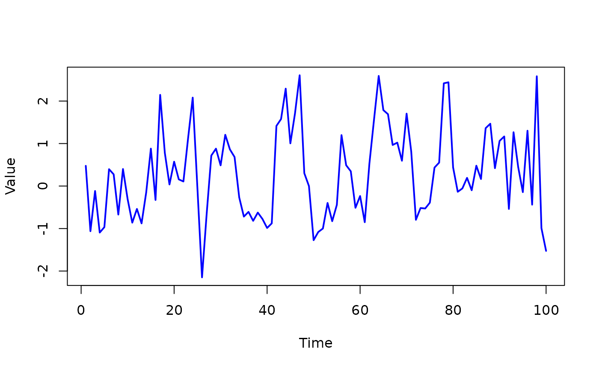

vignettes/cross-validation.Rmd
cross-validation.RmdCross-validation is a statistical method used to evaluate and improve the performance of machine learning models by testing them on different subsets of the data. The goal is to ensure that the model generalizes well to unseen data and doesn’t just perform well on the training set.
Since in the ngme2 package we can fit high flexible
models using Gaussian driven noise and non-Gaussian driven noise (or
mixture), we need to evaluate the performance of the model using
cross-validation. In this vignette, we will show how to perform
cross-validation for the ngme2 models.
Doing cross-validation in the ngme2 package is
straightforward. We can use the cross_validation function
to perform cross-validation for the ngme2 models. The
function has the following key arguments: 1. model: the
model to be fitted via ngme2 function. 2.
type: the type of cross-validation to be performed. It can
be either k-fold, loo (leave-one-out),
lpo (leave-percent-out), or custom
(user-defined training and testing sets). 3. k (optional):
the number of folds for k-fold cross-validation. 4.
percent (optional): the percentage of data to be left out
for lpo cross-validation. 5. times (optional):
the number of times to repeat for lpo cross-validation. 6.
train_idx (optional): the training set for
custom cross-validation. 7. test_idx
(optional): the testing set for custom cross-validation. 8.
n_burnin: the number of burn-in samples to be discarded. 9.
n_gibbs_samples: After burn-in period, the number of
posterior Gibbs samples to be drawn. The prediction is based on drawing
n_gibbs_samples samples from the posterior distribution.
10. N: Do it N multiple times to get more
accurate results.
Let’s run a simple example using the AR(1) model. We will generate
some data and fit the AR(1) model using the ngme2 function.
Then, we will perform cross-validation using the
cross_validation function.
library(ngme2)
set.seed(10)
n_obs = 100
ar1_model = f(1:n_obs, model="ar1", rho=0.5)
sim_fields <- simulate(ar1_model)[[1]]
plot(sim_fields, type="l", col="blue", lwd=2, xlab="Time", ylab="Value")
y <- sim_fields + rnorm(n_obs, 0, 0.5)
# Let's estimate the model in 3 ways
# 1. Poor estimation (only 10 iterations)
fit_ar_poor <- ngme(
y ~ 0 + f(1:n_obs, model="ar1"),
data = data.frame(y),
family = "normal",
control_opt = control_opt(
iterations = 10
)
)
#> Starting estimation...
#>
#> Starting posterior sampling...
#> Posterior sampling done!
#> Note:
#> 1. Use ngme_post_samples(..) to access the posterior samples.
#> 2. Use ngme_result(..) to access different latent models.
fit_ar_poor
#> *** Ngme object ***
#>
#> Fixed effects:
#> None
#>
#> Models:
#> $field1
#> Model type: AR(1)
#> rho = 0.242
#> Noise type: NORMAL
#> Noise parameters:
#> sigma = 1.09
#>
#> Measurement noise:
#> Noise type: NORMAL
#> Noise parameters:
#> sigma = 0.862
#>
#>
#> Number of replicates is 1
# 2. Good estimation (500 iterations)
fit_ar <- ngme(
y ~ 0 + f(1:n_obs, model="ar1"),
data = data.frame(y),
family = "normal",
control_opt = control_opt(
iterations = 500
)
)
#> Starting estimation...
#>
#> Starting posterior sampling...
#> Posterior sampling done!
#> Note:
#> 1. Use ngme_post_samples(..) to access the posterior samples.
#> 2. Use ngme_result(..) to access different latent models.
fit_ar
#> *** Ngme object ***
#>
#> Fixed effects:
#> None
#>
#> Models:
#> $field1
#> Model type: AR(1)
#> rho = 0.671
#> Noise type: NORMAL
#> Noise parameters:
#> sigma = 0.924
#>
#> Measurement noise:
#> Noise type: NORMAL
#> Noise parameters:
#> sigma = 0.781
#>
#>
#> Number of replicates is 1
# 3. Linear model
fit_linear <- ngme(
y ~ 1 + x,
data = data.frame(y=y, x=1:n_obs),
family = "normal",
control_opt = control_opt(
iterations = 10
)
)
#> Starting estimation...
#>
#> Starting posterior sampling...
#> Posterior sampling done!
#> Note:
#> 1. Use ngme_post_samples(..) to access the posterior samples.
#> 2. Use ngme_result(..) to access different latent models.
fit_linear
#> *** Ngme object ***
#>
#> Fixed effects:
#> (Intercept) x
#> -0.4288 0.0115
#>
#> Models:
#> Measurement noise:
#> Noise type: NORMAL
#> Noise parameters:
#> sigma = 1.16
#>
#>
#> Number of replicates is 1
# Doing Cross-validation
# 10-fold cross-validation
cv1 <- cross_validation(
list(
linear = fit_linear,
ar1_poor = fit_ar_poor,
ar1 = fit_ar
),
type = "k-fold",
k = 10,
n_gibbs_samples = 500,
N = 5,
seed = 10
)
#> MAE MSE neg.CRPS neg.sCRPS
#> linear 1.1568423 2.053166 1.0309791 5.475238
#> ar1_poor 1.0446154 1.715793 0.7876247 1.249642
#> ar1 0.9603908 1.441514 0.7317107 1.225714
# Leave-percent-out cross-validation (20%) with 5 repetitions
cross_validation(
list(
linear = fit_linear,
ar1_poor = fit_ar_poor,
ar1 = fit_ar
),
type = "lpo",
percent = 0.2,
times = 5,
n_gibbs_samples = 500,
seed = 10
)
#> MAE MSE neg.CRPS neg.sCRPS
#> linear 1.1162252 1.845721 0.9110127 10.405692
#> ar1_poor 0.9676457 1.487007 0.8121407 1.250432
#> ar1 0.8970169 1.296046 0.6402234 1.147286